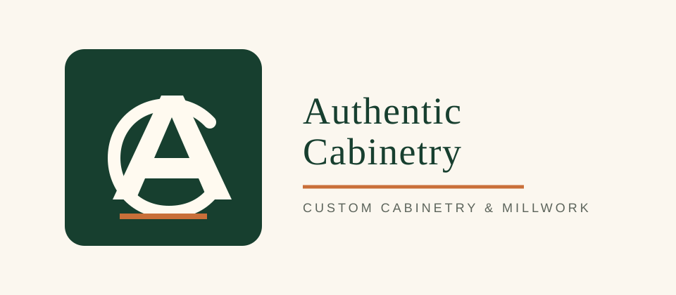
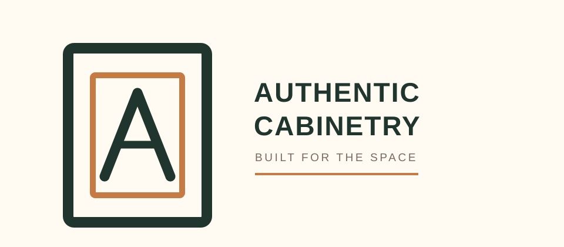
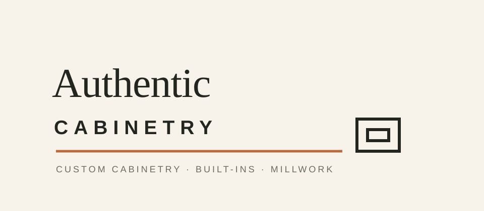
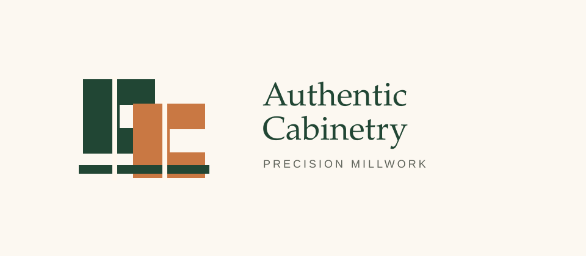
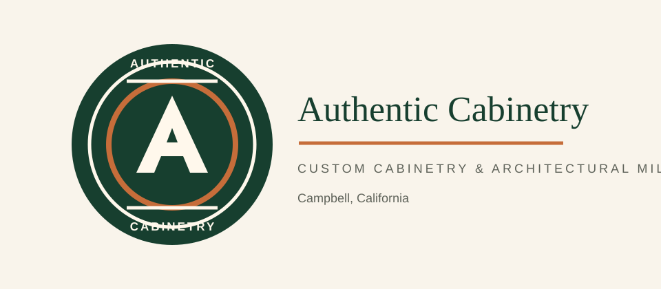

1. Heritage Monogram
Closest to the existing mark, but more premium and intentional. Strong for website, signage, favicon, and workwear.
Five vector-first directions for client review. These are intended as high-quality concept routes: each can be refined into final production artwork once the client chooses a direction.

Closest to the existing mark, but more premium and intentional. Strong for website, signage, favicon, and workwear.

A clearer cabinetry signal with a subtle A inside the door frame. Practical, readable, and easy for clients to understand.

More upscale and architectural. Best if the client wants to appeal to designers, builders, and higher-end residential work.

An abstract craft mark inspired by interlocking wood joinery. Distinctive without looking trendy or overdesigned.

A stamp-style option for a shop-made, heritage feel. Especially useful for social icons, labels, uniforms, and printed pieces.